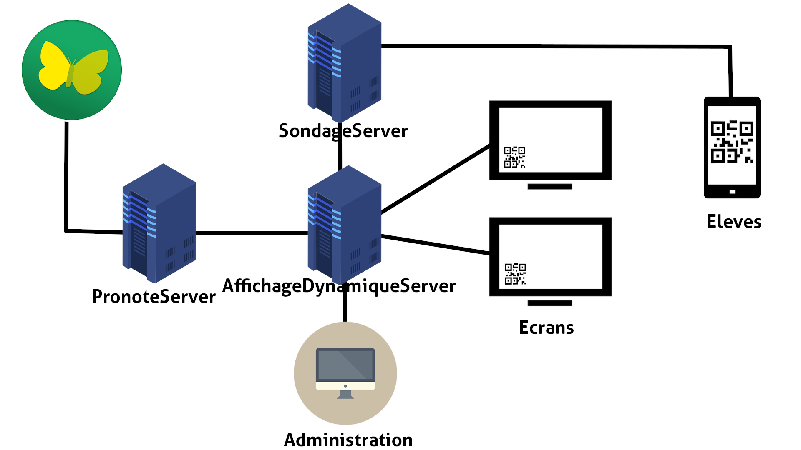
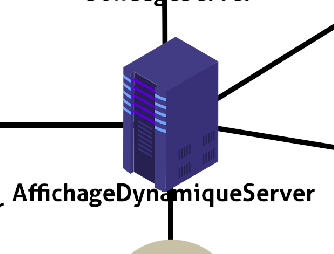
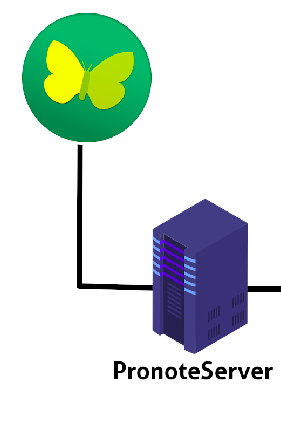

Les différents serveurs¶
Pour bien fonctionner, on a crée 3 serveurs qui communique ensemble, le serveur gérant l’affichage et sa gestion, un serveur qui s’occupe de faire le lien entre Pronote et le premier serveur et le dernier serveur qui s’occupe de faire le lien entre les élèves et le serveur principal pour les sondages.
{kind=link}
Gestion de l’affichage dynamique¶
{kind=link}
Le serveur est entièrement fait en python grâce au framework Django. Il se lance
sur le port 8000 de la machine. Il est découpé en 3 applications :
Affichage¶
L’application Affichage est assez simple, elle s’occupe de renvoyer les pages HTML correspondante à l’identifiant d’un l’écran fourni.
Par exemple, lorsque l’on fait une requête GET vers :
localhost/ecran?name=self
Elle nous renverra le fichier HTML correspondant au paramètre ecran, qui est self, à afficher.
Si l’application ne trouve pas de page correspondante, elle renverra un fichier HTML base qui nous sert à ne pas laisser un écran noir en plein milieu du lycée s’il y a une maintenance.
Références des fonctions et des vues: ici
PronoteServer¶
{kind=link}
Le serveur est entièrement fait en nodeJS avec le module pronote-api .
Le module étant seulement en nodeJS nous avons préféré faire un serveur secondaire qui fera le lien
entre pronote et le serveur Affichage dynamique. Ce serveur n’est disponible seulement en
local pour des raisons de sécurités.
Le serveur se connecte à pronote avec des identifiants donnés, garde une session
n’ayant pas de limite dans le temps et fait des requêtes vers Pronote quand on demande
une ressource provenant de Pronote, pour être sûr d’être à jour. Si jamais il y a un
problème avec le serveur nodeJS , chaque resultat de requête est sauvegardé dans la base
de données pour permettre de quand même retourner une valeur.
Pour le moment le serveur récupère seulement les profs absents et les menus de la date demandée (si la date n’est pas précisée, par defaut ça sera la date d’aujourd’hui qui sera utilisée)
Le serveur tourne sur le port 5000 en http.
Documentation de l’api : ici
Serveur sondage¶
{kind=link}
Le serveur sondage est entièrement consacré à faire le lien entre les élèves et le serveur AffichageDynamique.Il sert d’intermédiaire.
Il est programmé en Python (Django) et il se lance sur le port 8080 de la machine.
Il a une vue pour le choix du vote, et les autres qui ne sont que là pour connaitre le status de l’envoie du vote.
Documentation du serveur : ici.